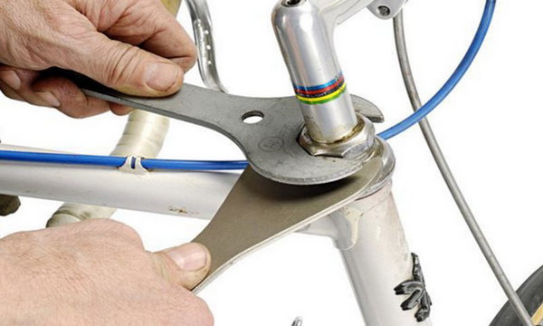
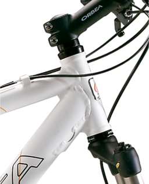
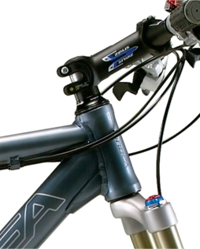
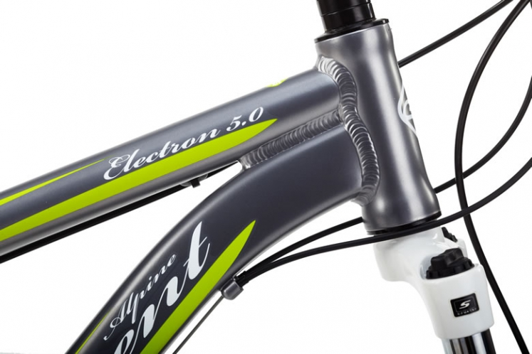

Всё о велосипедах
Рулевая колонка – это совокупность деталей (чашек, подшипников, проставочных колец…) благодаря которым осуществляется вращение руля велосипеда в стакане (участок рамы велосипеда спереди, определенной конструкции, в которую вставляется рулевая труба). Бывает четыре разновидности конструкции рулевой колонки:
Классическая схема, которая устанавливается на самые бюджетные велосипеды. Рулевая труба фиксируется в верхней части стакана при помощи контргайки. Из плюсов можно отметить дешевизну и легкость. Минусы – низкая надежность и сложная настройка.
Стандартный современный формат рулевой колонки (неинтенрированный), который представляет собой две чашки, впрессованные снизу и сверху стакана, в них вставляются подшипники и закрываются кольцами качения. Сверху могут устанавливаться проставочные кольца, с помощью которых регулируется высота руля. После надевается и фиксируется вынос. Фиксация рулевой трубы происходит благодаря якорю, который находится внутри и вытягивается болтом. К плюсам можно отнести легкость в обслуживании (чистке, смазке) и простая установки. К недостаткам – не самые качественные подшипники (хотя это еще зависит от стоимости вилки).
Считается самым оптимальным вариантом. Слегка дороже двух предыдущих конструкций. Отличием является то, что чашки полностью запрессованы внутрь стакана, что позволяет более просто настраивать высоту руля. Еще одной особенностью является использование промышленных подшипников, которые обладают большей надежностью и качеством работы, чем насыпные. Минусов два – более сложная конструкция, а как следствие сложность в обслуживании, и цена.
Интегрированная конструкция рулевой колонки велосипеда имеет множество стандартов. Отличается от остальных отсутствием чашек. Промышленные подшипники впрессовываются внутрь стакана. Плюсы – легкость, надежность. К минусам можно отнести сложность в обслуживании и ремонте рулевой колонки данного типа, а также проблема выбора из-за множества различных стандартов.
